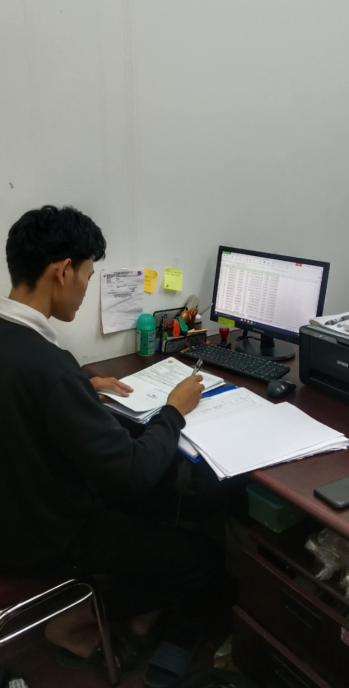

Tahap Finalisasi merupakan periode penyelesaian seluruh rangkaian tanggung jawab administratif selama magang sesi pertama di unit Operasional Kasda.
Fokus utama pada tahap ini adalah memastikan seluruh dokumen fisik yang telah divalidasi tersusun dengan rapi dalam sistem kearsipan. Selain itu, dilakukan penyusunan laporan tertulis sebagai bentuk pertanggungjawaban kepada sekolah dan pihak Bank Riau Kepri Syariah atas kompetensi yang telah dipelajari.